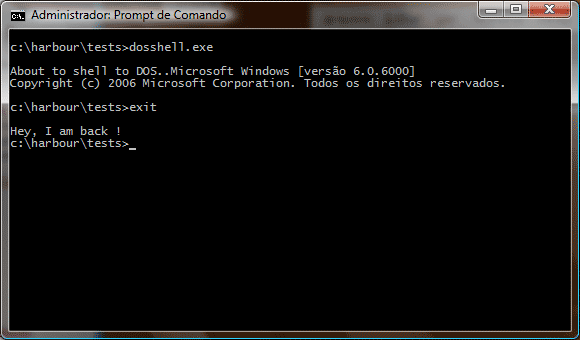

<br>
osshell sample running on Windows
<br><br>
<br>
osshell sample running on Linux
<br><br>
NOTE: To get the same result on Linux, you could execute a command &quot;run bash&quot;<br>
to force the beginning of a new shell.
